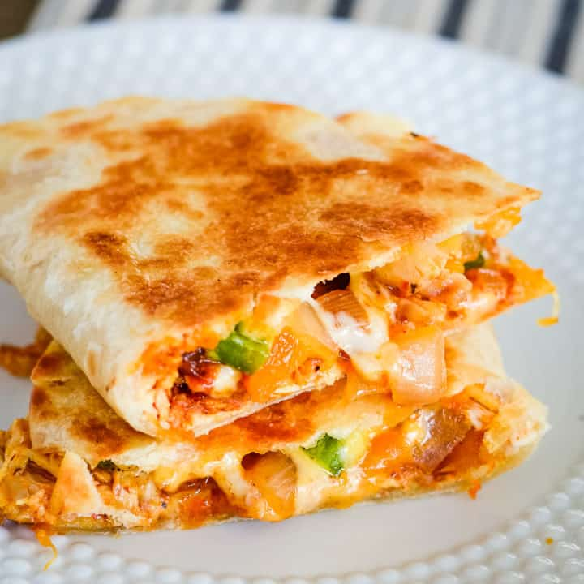

Korean Beef Seaweed Soup

Description
Quesadilla is a Mexican food made up of tortilla sandwich with cheese
and chicken or diced meat, however there are many different variations
and can have variety of ingredients mixed. It can be eaten for breakfast,
lunch or as a snack. We chose this recipe as it is simply delicious, easy
and fast to cook up. Below ingredietns are for 3-4 people portion, so
adjust it as you like!
Ingredients
- 600g Chicken
- Mozarella Cheese
- 6 Medium-size Toritlla
- Butter
Chicken Marinade
- Granulated Garlic
- Granulated Onion
- Ground paprika
- Oregano
- Salt & Pepper
Steps
- Cut chicken in bite sizes, marinate chicken in spices.
- Drizzle olive oil, and a little of butter into skillet
- Cook chicken on medium heat for 7-8 minutes until all cooked and golden. Once cooked, put it aside on the plate
- Lightly brush olive oil on tortilla on one side
- Add chicken and cheese on half side of the tortilla
- Fold the tortilla and cook until the tortilla is lightly crispy, then flip
- Cut the quesadilla into 2 or 3 pieces and place it on the plate. Enjoy!